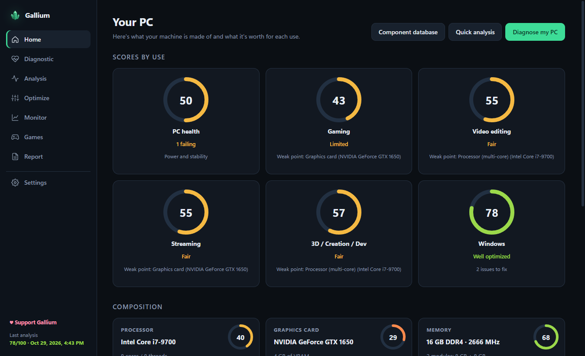
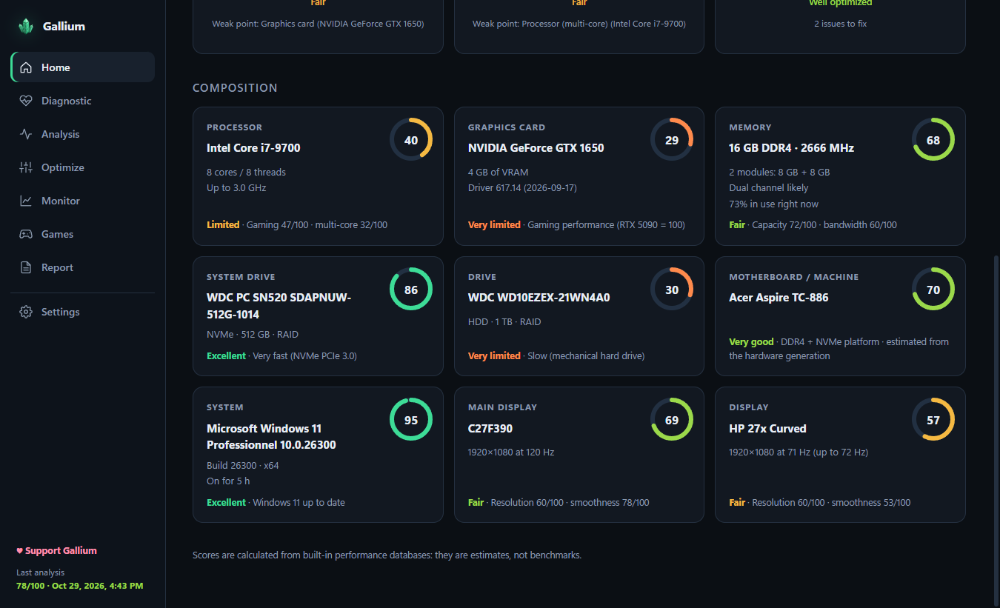
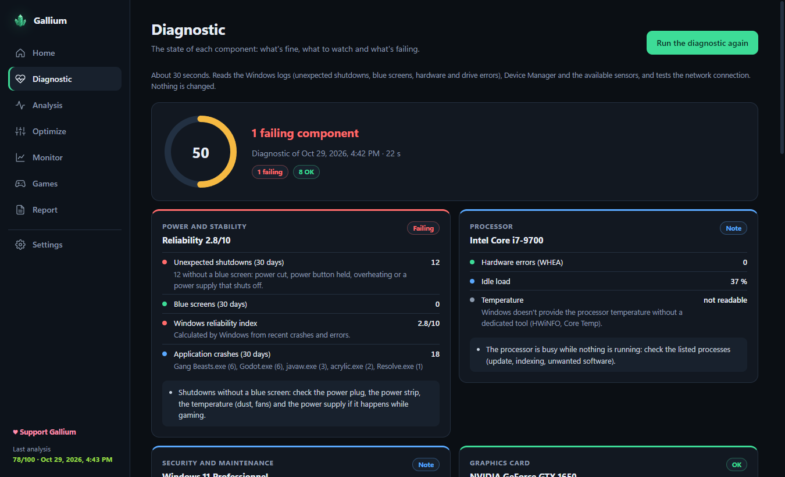
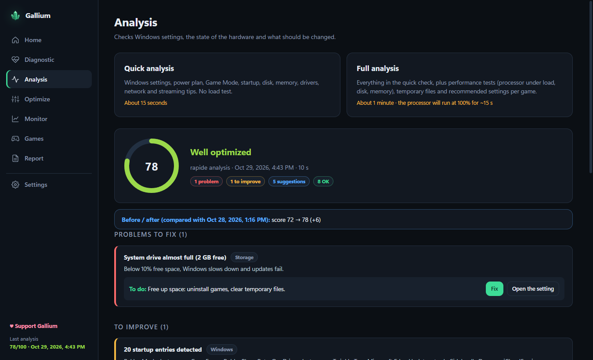
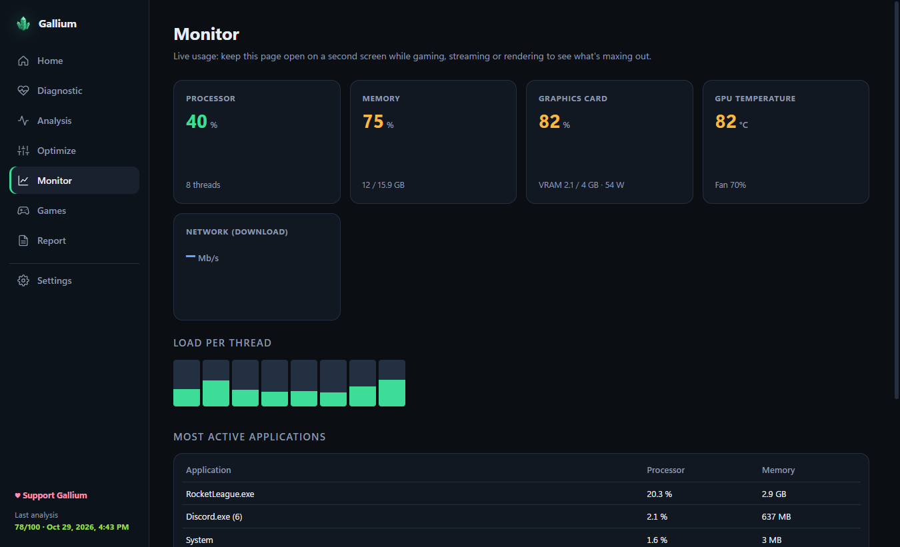
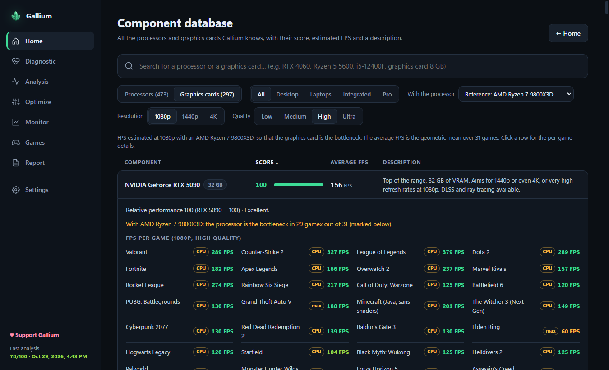
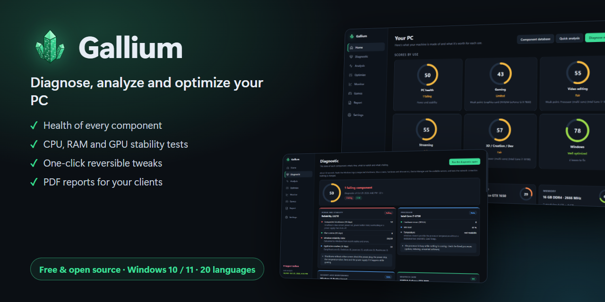

Gallium diagnoses every component of your Windows PC in 30 seconds, explains blue screens, tests stability and applies reversible optimizations. Free and open source.

No account, no ads, no telemetry. Everything runs on your PC.
Processor, graphics card, memory, every drive (SMART), battery, network and drivers, each one rated OK, Watch or Failing.
Stop codes decoded, crash dumps analyzed and the faulty driver or component named, along with unexpected shutdowns.
CPU at 100%, graphics card stress test, RAM check without restarting or the full Windows memory test.
Power plan, Game Mode, mouse acceleration, temporary files… One click, one click to undo, restore point first.
A score for every component, estimated FPS in about thirty games and a database of 470 CPUs and 300 GPUs.
CPU per thread, memory, graphics card, temperature, network and the most active applications.
Hover to pause, click to enlarge.






Yes. Gallium is free and open source under the GPL-3.0 license, with no ads and no paid version. You can support the project on Ko-fi if it helps you.
The app is not code-signed yet, so SmartScreen doesn't know it. Click More info → Run anyway. The full source code is on GitHub so you can check exactly what it does.
Reading drive health (SMART), the Windows event logs and crash dumps, and creating a restore point all require administrator rights.
No. Everything runs locally. The only network traffic is a ping to your router and to 1.1.1.1 to measure latency.
Each optimization only changes settings of your Windows account and can be undone in one click. A Windows restore point is created before the first change.
No, they are estimates computed from built-in performance tables. They are useful to compare hardware and spot bottlenecks, not to replace an in-game benchmark.
Gallium is free and will stay free. A coffee or a ⭐ on GitHub helps keep it going.
♥ Support on Ko-fi